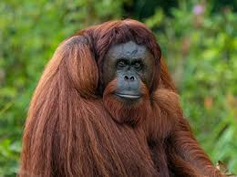

But first, why do we need to protect orangutans?

Orangutans help spread seeds by eating fruit and traveling long distances, allowing new plants and trees to grow and keeping the forest healthy. By protecting orangutans, we also protect thousands of other plant and animal species that depend on the same habitat. These forests are important for people too — they store large amounts of carbon, helping slow climate change, support local communities, and provide plants that scientists use to develop important medicines. "When we lose orangutans, we risk losing forests and all life within them - and then the whole world pays the price." Watch the video below for a better understanding: